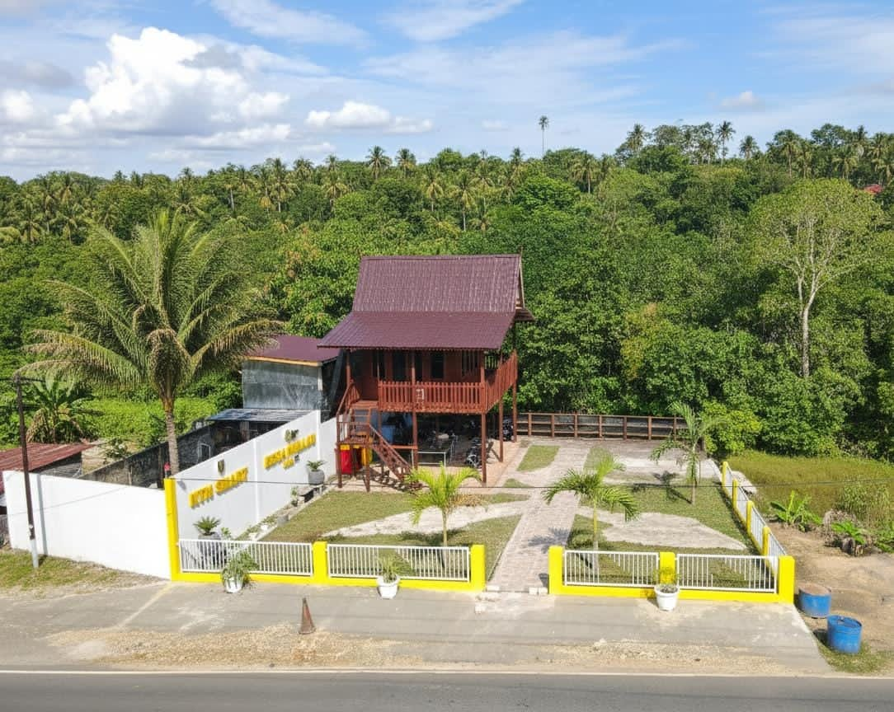
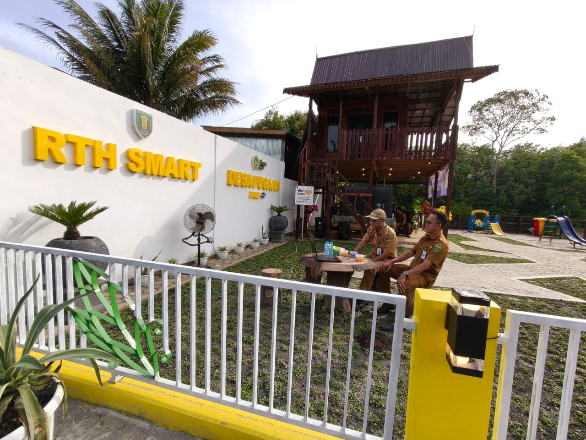

Dilengkapi fasilitas WiFi publik gratis untuk mendukung produktivitas warga serta akses informasi cepat.
Berbagai fasilitas modern yang dapat dinikmati pengunjung secara nyaman dan aman.
Akses internet kecepatan tinggi bebas hambatan di seluruh area taman untuk umum.
Keamanan taman terpantau ketat demi kenyamanan dan ketenangan pengunjung.
Wahana permainan yang aman dan menyenangkan untuk mendukung tumbuh kembang anak.
Pojok baca pintar dengan akses literasi digital untuk menambah wawasan.
Dokumentasi suasana, fasilitas, dan aktivitas di dalam kawasan RTH Smart Desa Pugaan.


Nikmati ragam makanan dan minuman lezat hasil olahan UMKM lokal Desa Pugaan.
Kopi pilihan khas lokal yang disajikan hangat menemani santai sore.
Minuman segar perasan jeruk asli penyegar dahaga di siang hari.
Kue tradisional dan camilan gurih hasil produksi warga Desa Pugaan.
Catat kehadiran Anda dan bagikan kesan kunjungan saat berkunjung ke RTH Smart Desa Pugaan.
Silakan isi daftar kehadiran dan unggah foto kunjungan Anda langsung melalui formulir Google Forms resmi kami:
Buka Buku Tamu & Unggah FotoTabalong
Tempat nongkrong baru yang asik dan fasilitas wifi-nya lancar.
Masukan Anda sangat berarti untuk kemajuan dan pengembangan RTH Smart ke depan.